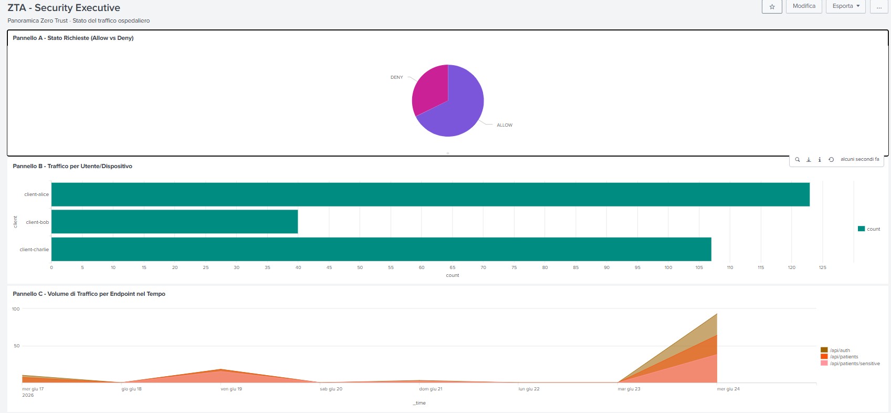
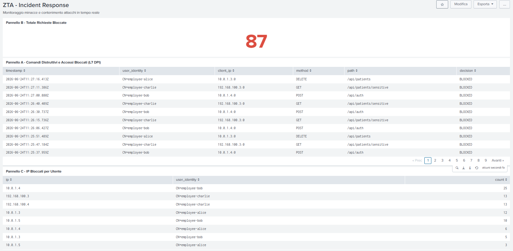
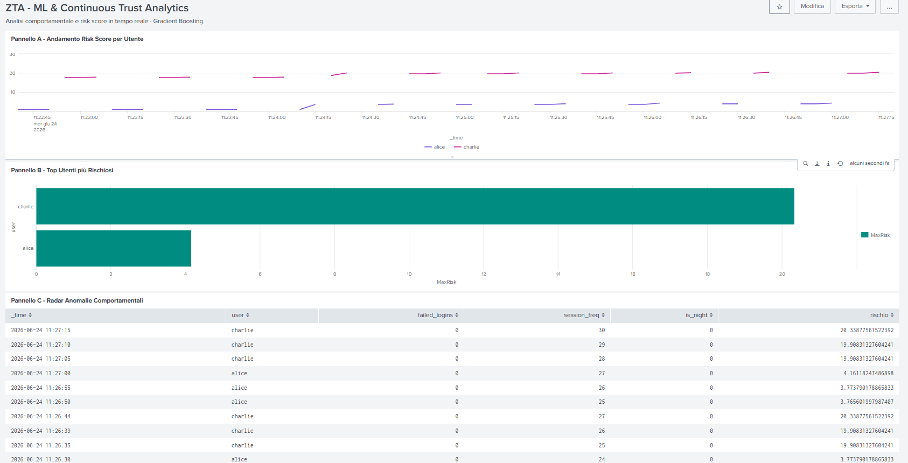

Protezione adattiva di database e API con verifica continua, Machine Learning e micro-segmentazione.
Il modello a "castello" presume che la rete interna sia sicura. Una volta violato il perimetro (phishing, exploit, insider threat), l'attaccante ottiene libertà di movimento laterale. In un dominio ospedaliero — cartelle cliniche, dati diagnostici, credenziali — questo è inaccettabile: violazioni di confidenzialità/integrità impattano normative internazionali e la business continuity.
NIST SP 800-207: nessuna fiducia implicita basata sulla localizzazione di rete. Ogni richiesta è autenticata, autorizzata e valutata nel contesto, indipendentemente dalla provenienza.
Dimensioni ZTA
Reti Docker segregate
Feature del modello ML
Record dataset sintetico
Scenari di validazione
Contesto, filosofia Zero Trust, caso di studio, obiettivi
Threat modeling, reti segregate, Envoy, ZTA 6D, container, MongoDB, Web API
Envoy config, ABAC/OPA, nftables, mTLS/TPM/JA3, Snort, Fluent-Bit, ML risk model
14 scenari operativi + dashboard Splunk
Obiettivi raggiunti, roadmap enterprise
Digitalizzazione e cloud hanno esteso enormemente la superficie d'attacco: accesso condiviso a risorse sensibili, automazione dei flussi, monitoraggio IoT. I database aziendali custodiscono dati finanziari, proprietà intellettuale, credenziali e profili utente.
Ogni richiesta di accesso, indipendentemente dalla rete di provenienza, deve essere autenticata, autorizzata e validata crittograficamente prima dell'inoltro.
Accesso concesso in modo granulare e ristretto, limitando scrittura e cancellazione dei record sensibili ai soli operatori autorizzati.
Si progetta assumendo che segmenti siano già compromessi: micro-segmentazione, crittografia end-to-end, monitoraggio continuo del traffico.
Il paradigma perimetrale classico presume la rete interna intrinsecamente sicura. Una volta violato il perimetro (phishing, exploit, insider threat) l'attaccante ottiene libertà di movimento laterale. Il paradigma ZTA, codificato dal NIST in SP 800-207, abbatte questa fiducia implicita basata sulla localizzazione di rete.
Personale medico interno, workstation aziendale con chip TPM hardware, collegata dalla rete locale 10.0.1.0/24.
Operatore interno con dispositivo personale privo di attestazione TPM. Rappresenta un possibile scenario di credenziali rubate senza possesso del TPM.
Professionista dotato di certificato e TPM ma collegato da rete esterna non controllata 192.168.100.0/24. Politiche più restrittive.
Il sistema gestisce un database MongoDB con anagrafiche pazienti, cartelle cliniche e dati diagnostici. Lo scenario dimostra l'adattamento dinamico delle soglie di sicurezza in funzione del contesto multidimensionale di ciascun accesso: identità, postura del dispositivo, localizzazione di rete.
Valutazione continua e adattiva del rischio basata su contesto di rete, comportamento utente e postura di sicurezza del dispositivo (inclusa attestazione hardware TPM).
| Componente | Ruolo |
|---|---|
| Envoy | PEP — intercetta ogni richiesta HTTP/MongoDB, mTLS, JA3, L7 DPI |
| OPA | PDP decentralizzato — valuta le 6 dimensioni ZTA (u,d,s,n,a,r) |
| Splunk MLTK | Rischio dinamico via Gradient Boosting |
| Splunk SIEM | Ingestion asincrona dei log, correlazione storica |
| nftables + Snort | Microsegmentazione L3/L4 e rilevamento movimento laterale |
Database MongoDB (data at rest), flussi verso le Web API (data in transit), cartelle cliniche. Impatto (I) classificato come severo sulla triade CID.
Compromissione credenziali, terminali privi di TPM, canali non cifrati, anomalie comportamentali fisiologiche.
Esfiltrazione dati, privilege escalation, attacchi injection, lateral movement tra container.
Ad ogni richiesta il PDP calcola il rischio attuale R e lo confronta con il Rischio Accettabile Ra. Il sistema autorizza solo se R ≤ Ra; in caso contrario scatta lo short-circuiting: blocco immediato L7 (OPA) o L3/L4 (nftables).
192.168.100.0/24
Rete untrusted, smart working. Unico contatto: listener Envoy.
10.0.1.0/24
Rete locale ospedaliera. Il firewall forza il routing verso Envoy.
Secure core: MongoDB + Web API. Raggiungibile solo dal proxy.
OPA, Fluent-Bit, Splunk. Verdetti e telemetria.
Flussi logici e canali di telemetria. Envoy è l'unico choke-point: dialoga con OPA per ogni verdetto di autorizzazione.
Nessun client possiede rotte dirette verso il backend: Envoy è l'unico choke-point, e ogni sua decisione passa dal verdetto sincrono di OPA.
Porte separate per protocollo: 8443 per HTTP cifrato, 27017 per MongoDB nativo, entrambe con mTLS obbligatorio. Il proxy decifra il payload e lo invia al blocco ext_authz, che sospende il socket attendendo il verdetto gRPC.
Stratificazione ISO/OSI: nftables opera a L3/L4 agendo da portinaio per instradare a Envoy; Envoy estende il controllo fino al Livello 7, abilitando una validazione contestuale profonda impossibile per un firewall tradizionale.
Identità dal Subject del certificato X.509 durante handshake mTLS (DOWNSTREAM_PEER_SUBJECT). Identifica Alice, Bob, Charlie.
Postura hardware, validata dall'estensione X.509 OID 1.3.6.1.4.1.9999.1 (TPM hardware o emulato).
Fingerprint JA3 della suite client — identifica browser autorizzato vs script Python malevolo.
Provenienza IP (DOWNSTREAM_REMOTE_ADDRESS): interna 10.0.1.0/24 vs esterna 192.168.100.0/24.
Metodo HTTP (GET/POST) o comando MongoDB estratto via L7 dal filtro mongo_proxy (find/insert/update/delete).
URI del servizio API o nome collezione MongoDB (patients, medical_records) via DPI.
zta-mongodb collegato esclusivamente a backend-net: inaccessibile a chiunque non possieda un'interfaccia sulla stessa rete. zta-firewall espone interfacce su tre reti, fungendo da gateway.
zta-snort condivide il network namespace di Envoy: network_mode: "service:envoy-pep". Intercetta passivamente tutto il traffico del proxy senza possibilità di interferire o bloccare direttamente.
L'intera infrastruttura è implementata con Docker e Docker Compose per garantire portabilità e isolamento rigoroso a livello di sistema operativo, seguendo il principio del minimo privilegio per ogni container.
Documenti con patient_id, name, age, ward, blood_type e piano terapeutico. Il database è isolato interamente in backend-net, senza porte esposte verso l'esterno.
Nelle iterazioni iniziali lo stato di fiducia dei dispositivi era memorizzato in collezioni dedicate (ZTA Policy Store). Nell'architettura definitiva questo è demandato interamente ai modelli predittivi del SIEM — il database torna un puro contenitore di dati operativi (Separation of Concerns).
Ogni query transita attraverso envoy.filters.network.mongo_proxy, che decodifica il protocollo (incl. OP_MSG) ed estrae il payload. Questo consente ad OPA di bloccare istantaneamente query distruttive (dropDatabase, cancellazioni massive) prima che raggiungano il motore di storage.
Il backend FastAPI (zta-web-api) espone /api/patients e /api/patients/sensitive, e arricchisce dinamicamente la query OPA con 6 variabili comportamentali dell'utente.
| failed_logins | Tasso di fallimento nelle ultime 24h |
| session_freq | Frequenza di sessione nell'ultima ora |
| hour_of_day / is_night | Indicatori di contesto temporale |
| sensitivity_level | Criticità della risorsa target |
| days_inactive | Indice di inattività dell'account |
Scelta architetturale: il tracciamento comportamentale è demandato all'API anziché a query di aggregazione Splunk sui log storici — interrogare continuamente indici di log introdurrebbe latenza incompatibile con la Continuous Authorization. Splunk MLTK resta puro motore di inferenza matematica.
Workstation d'ufficio interna autorizzata, TPM valido, subnet 10.0.1.0/24. Consulta senza limitazioni dati standard e sensibili.
Dispositivo sprovvisto di TPM: OPA blocca la sessione già dal form di login (403), applicando Short-Circuiting per evitare chiamate ridondanti al SIEM.
Smart working da rete esterna. Dispositivo con TPM: accesso concesso avendo rischio inferiore alla soglia ristretta (≤26).
Ogni container esegue un server web locale (simulator.py) con interfaccia HTML/CSS. La barra di ricerca del portale è usata anche per simulare attacchi L7 (parole chiave DROP/DELETE) intercettati dal filtro Lua di Envoy.
require_client_certificate)mongo_proxyx-client-fingerprint (JA3)require_client_certificate: true impone mTLS obbligatorio: nessuna connessione priva di certificato valido supera l'handshake.
x-client-fingerprintQuesta stratificazione sgrava PDP e motore ML da richieste palesemente malevole, ottimizzando la latenza.
Modello HRU: dominio definito da Soggetti S, Oggetti O, Diritti R. Matrice bidimensionale A dove A[si,oj] ⊆ R indica staticamente i diritti. L'operazione r è consentita ⟺ r ∈ A[si,oj].
Nell'ABAC sviluppato, la cella non è più una locazione fissa: diventa una funzione ricalcolata in tempo reale da OPA, dipendente dagli attributi correnti.
| Matrice A (istante t) | Standard | Sensibili | DB |
|---|---|---|---|
| s₁ Alice — Intranet, TPM | GET,POST | GET | find |
| s₂ Charlie — Esterno, TPM | GET | ∅ | ∅ |
| s₃ Attaccante — No TPM | ∅ | ∅ | ∅ |
Nessun diritto iniziale senza radice di fiducia hardware verificata — neutralizza brute-force prima della valutazione del rischio.
Endpoint /api/patients/sensitive negato se la rete non è interna o il TPM è assente, indipendentemente dall'identità.
Comandi distruttivi mai concessi su nessuna risorsa, per nessun soggetto.
OPA interpola le 6 dimensioni ZTA nella query SPL e interroga sincronicamente Splunk MLTK per il rischio comportamentale istantaneo, tramite http.send verso la Web API.
Se i criteri infrastrutturali di base falliscono (login senza TPM), OPA nega e assegna rischio massimo senza interpellare Splunk — riduce latenza e carico sul SIEM.
default allow = false — postura fail-closed di baseSegrega l'accesso a /api/patients/sensitive, bloccando preventivamente flussi verso domini non fidati se l'utente proviene da rete esterna o è privo di TPM.
Decodifica i payload nativi BSON e inibisce l'esecuzione di query distruttive dirette (dropDatabase), prevenendo alterazioni di stato non autorizzate.
Il verdetto finale di accesso (allow) è deliberato calcolando un livello di confidenza basato su stato hardware, localizzazione di rete e punteggio dinamico Splunk. Le soglie 26 e 38 derivano dall'analisi statistica della distribuzione normale dei log storici legittimi.
[NFT-BLOCK] + drop su porte non autorizzate (es. 8000)denylist + API FastAPI (fw_api.py) per ban IP in tempo realeMicrosegmentazione L3/L4: DNAT, protezione porte e ban dinamico in kernel space.
Ogni pacchetto transita per la denylist dinamica (nella catena FORWARD) anche dopo aver subito il DNAT verso Envoy. Un IP bannato dall'API di management viene quindi scartato a livello kernel indipendentemente dalla risorsa finale richiesta.
Ogni listener Envoy impone la presentazione di un certificato X.509 firmato dalla CA interna (ZTA Hospital Trust Root CA). L'istruzione require_client_certificate: true garantisce che nessuna connessione anonima superi l'handshake crittografico iniziale.
Il campo Common Name (CN) identifica univocamente l'operatore (es. employee-alice). Envoy lo estrae a runtime dal record di trasporto TLS e lo propaga in modo sicuro a OPA nel contesto della chiamata gRPC sincrona tramite l'attributo source.principal.
Lo script generate_identities.py simula il processo arricchendo i certificati delle workstation sicure (Alice, Charlie) con l'estensione custom OID 1.3.6.1.4.1.9999.1.
L'estensione sarebbe apposta dalla CA solo dopo validazione crittografica di una CSR firmata dalla Endorsement Key di un chip TPM fisico — garantendo l'inesportabilità della chiave privata.
Durante l'handshake TLS, tls_inspector calcola un hash deterministico dai parametri del ClientHello (versione TLS, cipher suite, estensioni, curve ellittiche). Distingue un browser autorizzato da un tool di attacco (curl, nmap).
Due dispositivi con stesso browser/OS producono lo stesso hash JA3: per gli operatori umani è crittograficamente indistinguibile — classificato come indicatore debole per accessi interattivi.
Per sensori IoT e microservizi headless senza TPM, un JA3 censito e costante abilita l'accesso in modalità degradata: soglia di rischio abbassata a ≤26, diritti verso endpoint sensibili/distruttivi inibiti a priori.
Deploy (architettura sidecar): network_mode: "service:envoy-pep" — Snort condivide il network namespace di Envoy, agganciandosi alla sua interfaccia senza IP proprio e senza latenza aggiuntiva. Agisce a tutti gli effetti come una sonda TAP invisibile.
| SID | Regola | Trigger |
|---|---|---|
| 1000001 | Nmap SYN Scan | 20 SYN / 10s |
| 1000002 | Audit MongoDB nativo | Qualsiasi pkt :27017 |
| 1000003 | DoS volumetrico | 100 SYN / 5s :8443 |
| 1000004 | Downgrade / chiaro | "GET " nel payload |
| 1000005 | Brute-force mTLS | 15 RST / 10s |
Tutta la telemetria di sicurezza (accessi, decisioni, alert di rete) viene catturata in tempo reale dai rispettivi container tramite volumi Docker condivisi e normalizzata da Fluent-Bit, prima dell'ingestion asincrona verso il SIEM (Splunk via HTTP Event Collector).
| Sorgente | Tag | Percorso | Container |
|---|---|---|---|
| Snort IDS | snort.alerts | /var/log/snort/alert_json.txt | zta-snort |
| MongoDB | mongo.audit | /var/log/mongodb/mongod.log | zta-mongodb |
| Envoy PEP | envoy.access | /var/log/envoy/access.log | zta-envoy |
| OPA PDP | opa.decisions | /var/log/opa/decision.log | zta-opa |
| nftables | nftables.kernel | /var/log/nftables/firewall.log | zta-firewall |
Alle 6 dimensioni identitarie ZTA (user, software, device, network, action, resource) si aggiungono 6 feature comportamentali, iniettate dinamicamente dalla Web API, per abilitare la Continuous Authorization.
Tentativi di accesso falliti nelle ultime 24h. Indicatore critico di brute-force.
Fascia oraria e flag dedotto is_night per anomalie di accessi notturni (22:00–06:00).
Frequenza delle richieste nell'ultima ora (indicatore primario per traffico anti-bot).
Grado di criticità della risorsa clinica richiesta (es. cartella pazienti vs menù mensa).
Giorni trascorsi dall'ultimo login riuscito. Aiuta a rilevare account dormienti compromessi.
Flag booleano che indica se la richiesta avviene in orario notturno, al di fuori delle fasce lavorative standard.
50.000 record, che mappano profili aziendali legittimi (alice, bob, charlie) e pattern di attacco di diversa intensità (hacker_x, script_kiddie, insider_threat, apt_agent, intruder_7).
Punteggio di rischio su scala continua 0–100, calcolato in addestramento con una funzione deterministica non lineare a tre livelli.
ΔHW — dispositivo privo di attestazione TPM (missing/unknown)
ΔRete — connessione da rete esterna al perimetro ospedaliero
ΔCombo — correlazione critica: no-TPM e rete esterna simultaneamente
Valuta la conformità del dispositivo e del canale prima dell'analisi delle azioni utente.
| Componente | Formula / Regola | Cap Massimo |
|---|---|---|
| BLogins | min(failed×3.5 + log₂(failed+1)×2.5, 25) | 25 |
| BNight | +5 se orario in [22:00, 06:00) | 5 |
| BFreq | +7 (>30) / +4 (20-30) / +2 (10-20) richieste/h | 7 |
| BInact | min(⌊giorni/15⌋×2, 8) | 8 |
| BAction | +8 se comando distruttivo (delete/drop) | 8 |
| BSoft | +4 se tool di scansione (nmap, curl, metasploit...) | 4 |
| Livello 1 | M = 1.00 — utenti |
| Livello 2 | M = 1.175 — pazienti, system logs |
| Livello 3 | M = 1.35 — cartelle cliniche, config_db |
ε ~ N(0,2) introduce fluttuazione stocastica; operatore di clamping rigido in [0,100]. Fondamentale per l'addestramento del GradientBoostingRegressor: previene overfitting su un dataset puramente geometrico, forzando la generalizzazione delle relazioni non lineari latenti.
Alberi paralleli, predizione come media aritmetica. Riduce la varianza ma "smussa" le anomalie — difetto critico in sicurezza, dove un picco anomalo non va attenuato.
Apprendimento additivo sequenziale: ogni albero corregge i residui del precedente, minimizzando direttamente la Loss Function tramite il gradiente dell'errore.
Un utente che fallisce 5 login di giorno dall'ufficio ha rischio moderato; lo stesso utente che fallisce 5 login alle 3 di notte da IP esterno rappresenta una minaccia critica. Il Gradient Boosting, focalizzandosi sulla correzione degli errori sui casi limite, penalizza severamente questa combinazione atipica — cosa che un Random Forest tenderebbe a mediare via.
Il modello restituisce un punteggio numerico continuo (es. 18.4, 42.7), non un giudizio binario. Il modello, addestrato con permessi Globali, è interrogabile via API REST.
OPA ingerisce il valore per applicare politiche adattive: blocco per rischio >38 su rete interna o >26 su rete esterna, rendendo il perimetro fluido e proporzionale alla postura reale dell'utente.
| # | Scenario | Layer | Esito |
|---|---|---|---|
| 1 | Connessione senza certificato client | L5/6 TLS | Alert TLS |
| 2 | Certificato non firmato dalla CA | L5/6 TLS | Unknown CA |
| 3 | Bypass L4 diretto (curl :8000) | L3/4 | DROP nftables |
| 4 | Accesso legittimo interno — Alice | L7 | ALLOW (9.96) |
| 5 | Blocco login no-TPM — Bob | L7 | DENY (100) |
| 6 | Accesso legittimo esterno — Charlie | L7 | ALLOW (17.7) |
| 7-8 | Dati sensibili — Alice / Charlie | L7 DPI | ALLOW / DENY |
| 9 | TCP diretto MongoDB — Alice / Bob | L4/7 | ALLOW / DENY |
| 10 | Payload DELETE su /api/patients | L7 DPI | 403 Blocked |
| 10.1 | Insider Threat — Alice compromessa | ML | DENY (95.49) |
| 11-14 | Nmap, Audit, DoS, Downgrade | NIDS | Detection |
Il proxy Envoy rileva l'assenza del certificato durante l'handshake TLS. La connessione è abortita a livello di trasporto: la richiesta HTTP non viene mai elaborata — né OPA, né Splunk, né il backend sono interpellati. Approccio fail-closed, overhead computazionale azzerato.
Envoy valida rigorosamente la Certificate Authority emittente. Il certificato self-signed non corrisponde alla Root CA interna: la connessione è interrotta immediatamente all'handshake, senza esporre alcuna risorsa interna.
$ curl --connect-timeout 3 \ http://zta-firewall:8000/api/patients curl: (28) Connection timed out
I pacchetti sono scartati (DROP) in kernel space da nftables prima di raggiungere Envoy. Nessuna chiamata gRPC a OPA né interrogazione al modello ML viene innescata, annullando il carico computazionale. L'unica traccia in Splunk proviene dai log diretti di nftables ([NFT-BLOCK]) e dagli alert della sonda Snort. La Response automatica attiva resta sviluppo futuro.
| Decision | ALLOW |
| tpm_present | true |
| network_internal | true |
| risk_score | ≈ 9.96 (soglia ≤ 38) |
| l7_dpi_block | false |
Envoy estrae il certificato, calcola JA3, trasmette a OPA. Splunk MLTK calcola un rischio minimo per assenza di anomalie comportamentali: la query è instradata al database in pochi millisecondi.
| Decision | DENY |
| tpm_present | false |
| is_auth_blocked | true |
| risk_score | 100 (short-circuit, assegnato) |
La negoziazione TLS/mTLS si completa (certificati validi), ma il diniego avviene a Livello 7: OPA rileva l'assenza TPM e blocca senza interpellare Splunk. nftables non interviene: l'IP di Bob è nel flusso interno consentito.
| network_internal | false |
| tpm_present | true |
| risk_score | 17.7 (soglia ≤ 26) |
| Decision | ALLOW |
Nessun blocco preventivo: il sistema abilita un controllo adattivo. La penalità di rete esterna (+18) è compensata da un comportamento pulito, mantenendo il rischio sotto la soglia ristretta di 26.
Workstation interna, TPM validato, nessuna anomalia: il PDP autorizza la lettura del Fascicolo Sanitario Elettronico completo di note riservate.
ALLOWAutenticazione già riuscita (Scenario 6), ma DPI L7 rileva network_internal:false: la Policy 3 svuota la cella della matrice per questo endpoint.
Principio di Least Privilege: il diniego non dipende dai permessi generici dell'utente, ma dalla protezione intrinseca del dato — richiede sempre connessione dalla rete interna, indipendentemente dall'identità.
OPA rileva tpm_present:true e autorizza l'apertura del tunnel TCP bidirezionale.
OPA nega alla radice per non conformità hardware; Envoy interrompe la negoziazione, impedendo la creazione del tunnel.
Coerenza architetturale dimostrata: il database è protetto a Layer 4 in modo identico alle Web API a Layer 7.
Alice (dispositivo conforme, TPM valido) invia una richiesta HTTP DELETE verso /api/patients — cancellazione di dati clinici.
| method | DELETE |
| path | /api/patients |
| response_code | 403 |
| user_identity | CN=employee-alice |
Anche un utente pienamente legittimo viene bloccato: il sistema agisce come WAF context-aware, applicando Least Privilege sui verbi HTTP indipendentemente dall'identità. Lo stesso principio si applica via mongo_proxy per comandi MongoDB nativi distruttivi, con Splunk MLTK che calcola il risk score prima dell'enforcement finale.
L'attaccante possiede fisicamente il dispositivo, il TPM è validato e i certificati mTLS sono quelli legittimi di Alice. Supera il firewall e bypassa le Web API tentando una connessione diretta alla porta di MongoDB via pymongo, sfruttando il file alice_combined.pem rubato.
Il Policy Information Point rileva l'azione e inietta a runtime metriche altamente degradate (failed_logins=4, session_freq=30, days_inactive=60, is_night=1). Il modello Gradient Boosting produce istantaneamente un risk score di 95.49. Essendo superiore alla soglia tollerata di 38, OPA emette un DENY tranciando la connessione.
Snort correla il pattern SYN (sid:1000001) e genera un alert centralizzato in Splunk, correlando l'IP sorgente (192.168.100.3) al target.
Connessione TCP diretta rilevata (sid:1000002): non un blocco, ma un evento di audit — deviazione dal canale HTTPS autorizzato, comunque tracciata forensicamente.
Soglia 100 tentativi/5s superata (sid:1000003): alert di priorità elevata verso il SIEM.
Snort rileva la stringa "GET " in chiaro su porta TLS (sid:1000004): Envoy rifiuta comunque la connessione, Snort notifica il tentativo di manomissione.
In produzione questi eventi innescherebbero rate-limiting selettivo o blacklist automatica (SOAR) — il PoC attuale valida solo la catena di Detection, non la Response automatizzata.

Ripartizione statistica Allow vs Deny — valida in tempo reale l'efficacia delle policy di microsegmentazione attive.
Volume di traffico per singolo soggetto/dispositivo — identifica rapidamente i nodi più attivi della rete.
Telemetria verso gli endpoint critici (/api/auth, /api/patients, /api/patients/sensitive) — evidenzia picchi anomali di carico che potrebbero indicare accesso massivo.

Evidenza forense delle violazioni L7: timestamp, identità (user_identity), IP, metodo HTTP, path, decisione BLOCKED applicata dal PDP.
Conteggio aggregato delle richieste bloccate — KPI fondamentale per la valutazione del rischio residuo.
Correlazione violazioni per indirizzo IP, evidenziando sorgenti (es. 10.0.1.4, 192.168.100.3) con comportamento malevolo ricorrente.

Andamento del Risk Score nel tempo per ciascun utente — osserva la dinamica della fiducia (es. oscillazioni per Charlie).
Classifica utenti per rischio massimo raggiunto — supporto decisionale per le procedure di isolamento automatizzato.
Radar dei parametri di contesto: frequenza sessioni, login falliti, flag notturno — chiudono il ciclo di feedback tra analisi e autorizzazione.
Microsegmentazione L3/L4 via nftables, mTLS obbligatorio, fingerprinting JA3, attestazione hardware TPM. Nessun bypass possibile del choke-point Envoy.
OPA valuta dinamicamente le 6 dimensioni ZTA con short-circuiting per ottimizzare la latenza. Due livelli L7 DPI: filtro Lua + ispezione nativa BSON.
Splunk MLTK con Gradient Boosting su 12 feature contestuali/comportamentali. Continuous Authorization capace di smascherare Insider Threat anche con credenziali valide, con monitoraggio Snort continuo.
La generazione statica dei certificati x509 potrebbe essere sostituita dallo standard SPIFFE/SPIRE: certificati short-lived basati su attestazione continua del workload, eliminando la complessità delle Certificate Revocation List (CRL).
Estensione sicura a dispositivi privi di TPM (kiosk informativi, comunicazioni Machine-to-Machine via API), con modelli ML dedicati che abbassino le soglie di tolleranza e monitorino con maggior severità l'ancoraggio JA3.
Ingestione degli alert Snort e dei drop nftables come feature di addestramento aggiuntive, per correlare anomalie applicative con movimenti laterali di rete e aumentare la precisione contro le APT.
L'API REST FastAPI per l'inserimento dinamico in denylist è già predisposta: evoluzione verso una pipeline SOAR completa con webhook automatici da Splunk verso il firewall, isolamento istantaneo senza intervento umano.
In scenari multi-ospedale, addestramento del modello Gradient Boosting condividendo solo gradienti/pesi algoritmici tra i SIEM, senza mai scambiare log grezzi — rispetto nativo dei vincoli GDPR.
Applicazione del paradigma "Never trust, always verify" per la protezione dei dati in ambito clinico e ospedaliero.